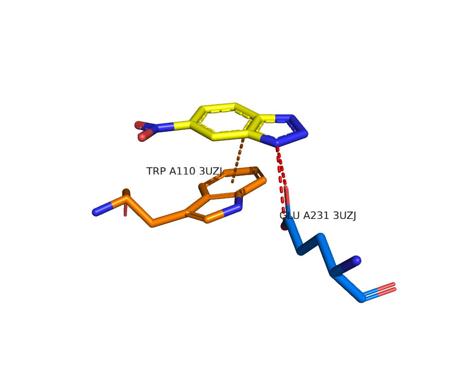
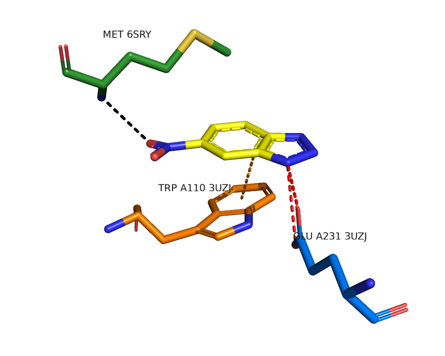
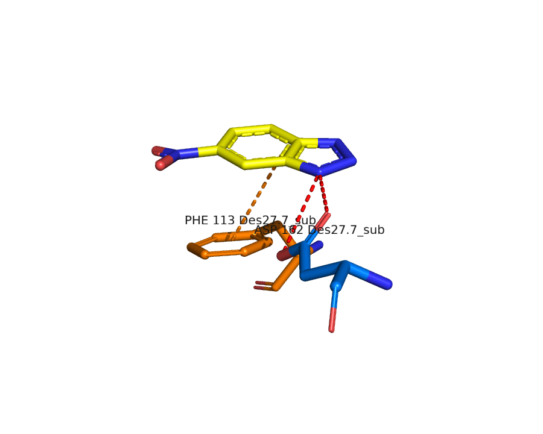
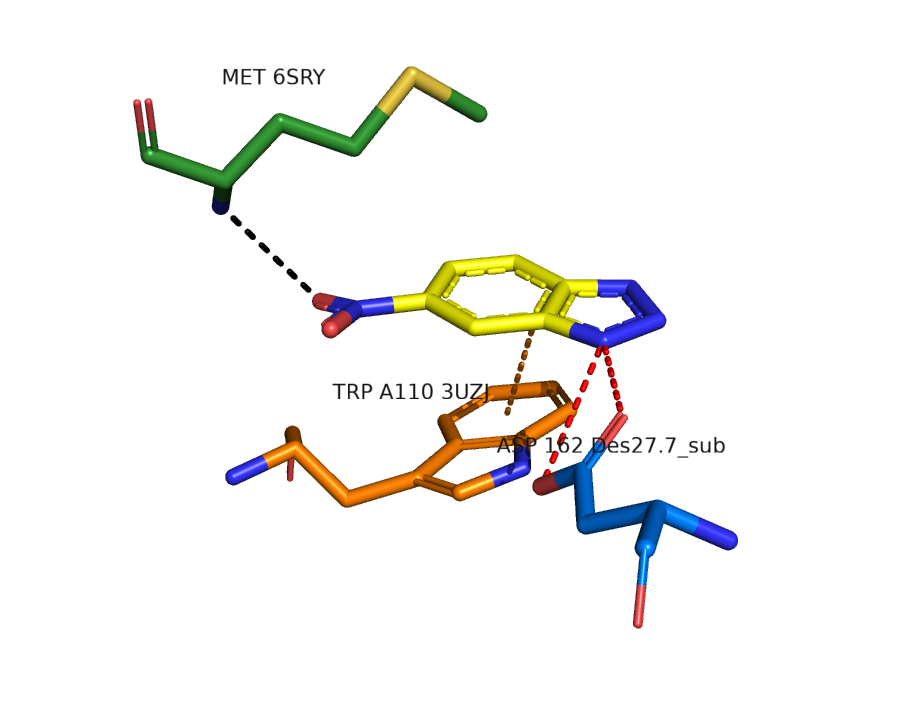
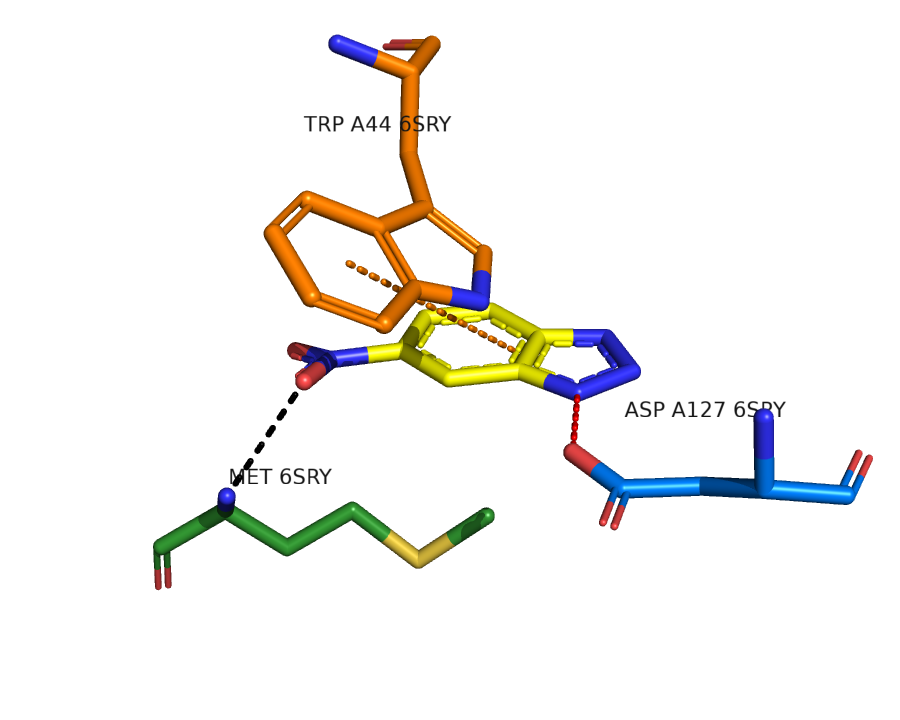
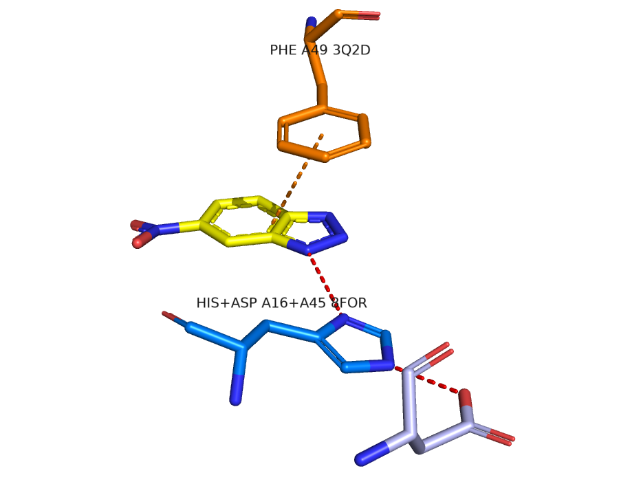
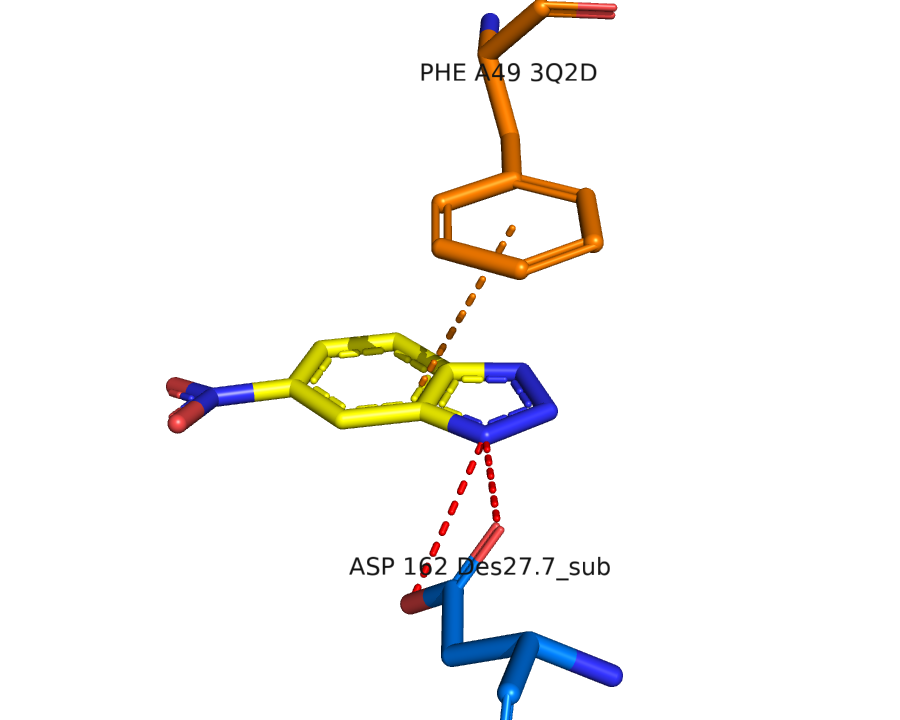
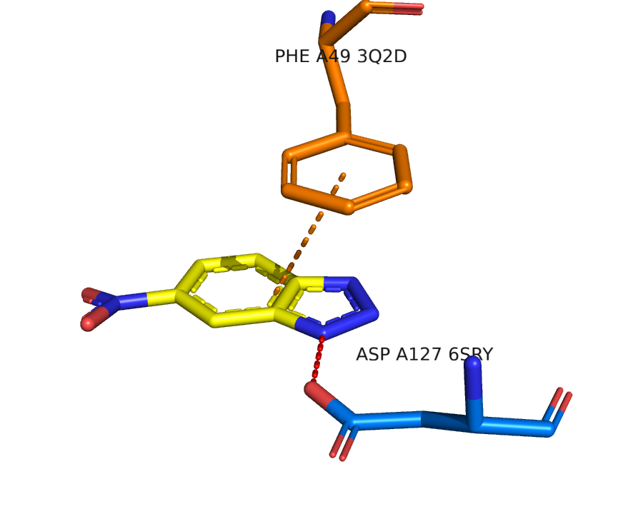

1 · KE59-type minimal theozyme
| Base | GLU A231 3UZJ · Glu (N3) |
| π stacker | TRP A110 3UZJ |
| Nitro stabiliser | none |
base d=2.67A angA=131 torA=-167 angB=111 torB=170; pi d=3.76A tilt=16.4 lat=1.37
Why. Best default score and the only candidate in the top 25 under four of the five weightings. Base and stacker were seen together in one crystal structure (KE59 R13, 3UZJ). Glu O to N3 is 2.67 Å and in the TSA plane; Trp110 stacks at 3.76 Å with a 16° tilt. The KE59 lineage reached 60,430 M⁻¹s⁻¹ with 5-nitrobenzisoxazole.
Risks. The source ligand (3UZJ) is plain benzotriazole with no nitro group, so nothing in the template touches the nitro position. The structure is from an evolved variant, not the original KE59 design.

2 · The same, with a backbone-NH nitro anchor
| Base | GLU A231 3UZJ · Glu (N3) |
| π stacker | TRP A110 3UZJ |
| Nitro stabiliser | MET(bb_NH) 6SRY |
base d=2.67A angA=131 torA=-167 angB=111 torB=170; pi d=3.76A tilt=16.4 lat=1.37; nitro MET N d=2.86A ang=102.4 elev=51.5
Why. Adds a Met backbone N–H taken from the nitro data (6SRY, HG series): N···O 2.86 Å, angle 102°, 52° above the nitro plane, which reproduces the source contact (2.82 Å, 106°, 47°). Best-scoring candidate that has a stabiliser; Met backbone NH is also the contact seen in the Kemp eliminase entries.
Risks. Des27.7, the best computational-only enzyme, has no polar contact at all, so the benefit of this anchor is untested. The Met comes from a different protein family and was never seen with this base and stacker.

3 · Des27.7 as designed (Asp162 + Phe113)
| Base | ASP 162 Des27.7_sub · Asp (N3) |
| π stacker | PHE 113 Des27.7_sub |
| Nitro stabiliser | none |
base d=2.69A angA=130 torA=-180 angB=113 torB=-179; pi d=4.23A tilt=19.2 lat=1.89
Why. The theozyme of the best published computational-only design (12,700 M⁻¹s⁻¹; crystal structure 9HVB confirms Asp162). Highest base-geometry score (0.95) and top rank under base-first weighting.
Risks. The substrate pose is a Rosetta model built with the same constraint file used to score it, so the 0.95 is partly circular. Phe113 stacks less tightly (4.23 Å, 19°) than Trp110, and it falls to rank 239 under geometry-only weighting.

4 · Hybrid: Asp162 + Trp110 + Met NH
| Base | ASP 162 Des27.7_sub · Asp (N3) |
| π stacker | TRP A110 3UZJ |
| Nitro stabiliser | MET(bb_NH) 6SRY |
base d=2.69A angA=130 torA=-180 angB=113 torB=-179; pi d=3.76A tilt=16.4 lat=1.37; nitro MET N d=2.86A ang=102.4 elev=51.5
Why. On the Pareto front. Keeps the Des27.7 base geometry, swaps in the tighter Trp110 stack (3.76 Å) and adds the Met NH anchor. Rank 3 under base-first and 21 under geometry-only.
Risks. A chimera: components come from three proteins and were never seen together. It drops to rank 487 when evidence dominates.

5 · HG-series native set (Asp127 + Trp44 + Met237 NH)
| Base | ASP A127 6SRY · Asp (N3) |
| π stacker | TRP A44 6SRY |
| Nitro stabiliser | MET(bb_NH) 6SRY |
base d=2.54A angA=121 torA=172 angB=130 torB=12; pi d=4.46A tilt=31.4 lat=2.88; nitro MET N d=2.79A ang=101.1 elev=51.1
Why. All three components co-observed in one crystal structure (6SRY), from the lineage with the highest published activity (≈2.3×10⁵, HG3.17; value not verified in the paper text). Evidence score 1.0, rank 9 when evidence dominates.
Risks. Geometrically loose: Trp44 is 4.46 Å away with a 31° tilt and 2.9 Å lateral offset (π score 0.39), so it ranks 5,063rd on geometry. The retrospective check (below) shows this lineage's activity does not come from clean static geometry.

6 · His–Asp dyad (KE70-type) + Phe stack
| Base | HIS+ASP A16+A45 8FOR · His-Asp Dyad (N3) |
| π stacker | PHE A49 3Q2D |
| Nitro stabiliser | none |
base d=3.02A angA=145 torA=-156 dyad d=2.75; pi d=3.92A tilt=5.1 lat=1.69
Why. The only dyad template (8FOR, KE70-core): His ND1 to N3 3.02 Å, Asp to His 2.75 Å, Phe49 stacked at 3.92 Å (5° tilt). KE70 reached 55,000 M⁻¹s⁻¹ after nine rounds.
Risks. One template only, so no variation within the class. Rank 94 by default and 1,136 under base-first weighting; the dyad geometry scores 0.75.

7 · Asp162 + Phe49 (geometry-first)
| Base | ASP 162 Des27.7_sub · Asp (N3) |
| π stacker | PHE A49 3Q2D |
| Nitro stabiliser | none |
base d=2.69A angA=130 torA=-180 angB=113 torB=-179; pi d=3.92A tilt=5.1 lat=1.69
Why. Rank 2 under both geometry-only and base-first weightings: the Des27.7 base geometry with a tight, nearly parallel Phe stack (3.92 Å, 5° tilt).
Risks. Another chimera with the same circularity caveat on the base, and weak evidence support (rank 1,743 when evidence dominates).

8 · HG Asp127 + Phe49
| Base | ASP A127 6SRY · Asp (N3) |
| π stacker | PHE A49 3Q2D |
| Nitro stabiliser | none |
base d=2.54A angA=121 torA=172 angB=130 torB=12; pi d=3.92A tilt=5.1 lat=1.69
Why. HG-type syn Asp127 (N···O 2.54 Å) paired with the same tight Phe stack: tests whether the HG base would work with a tighter stacker than Trp44.
Risks. Never observed together. Middling under every weighting (ranks 89–406).
Geometry against evidence
Every valid candidate (grey) with the Pareto front (line): no candidate beats a front point on both axes.
Best score by base and stabiliser class
| Best total score | none | backbone NH | side chain |
|---|---|---|---|
| Glu (N3) | 0.909T00001 · rank 1 | 0.879T00003 · rank 3 | 0.857T00012 · rank 12 |
| Asp (N3) | 0.854T00015 · rank 15 | 0.867T00007 · rank 7 | 0.831T00093 · rank 93 |
| His-Asp Dyad (N3) | 0.831T00094 · rank 94 | 0.823T00169 · rank 169 | 0.806T00405 · rank 405 |
| Asp (N1) | 0.755T01501 · rank 1,501 | 0.795T00631 · rank 631 | 0.759T01418 · rank 1,418 |
| Glu (N1) | 0.679T03992 · rank 3,992 | 0.693T03394 · rank 3,394 | 0.673T04283 · rank 4,283 |
Retrospective check
Geometry-only score of each lineage's native base + stacker pair (both from one crystal structure, no stabiliser) against that lineage's best kcat/KM. ρ = -0.10, n = 5: no relationship, so the score is not a predictor.
| Lineage | Geometry-only score | Best kcat/KM (M⁻¹s⁻¹) |
|---|---|---|
| HG / xylanase 1GOR | 0.715 | 230,000 |
| KE59 / IGPS | 0.911 | 60,430 |
| KE70 / DERA | 0.802 | 55,000 |
| Des27 / IGPS chimera | 0.911 | 12,700 |
| 1A53-2 / IGPS | 0.760 | 64 |
How the score is built
| Component | What it measures | Target and source |
|---|---|---|
| base (0.35) | Carboxylate approach: O···N distance, angle at N, in-plane torsion, carboxylate orientation. Dyad: His N···N3 and Asp O···His N. | Listov 2025 Rosetta constraint (theozime.cst: 127.6°, 120°, 180°) with 2× its tolerances; distance 2.6 Å, the observed TSA-complex median; syn and anti both accepted. N1-side bases ×0.75. |
| π (0.25) | Ring-centroid distance, tilt, lateral offset to the TSA. | 3.8 Å, ≤10° tilt, ≤1.5 Å offset: the tight stackers in the crystal structures (IGPS Trp110/Trp210, KE70 Phe). |
| nitro (0.10, only if present) | Typicality of d(O···X), angle N–O···X and elevation within its residue/contact class, class frequency, Kemp-entry support, aromatic-nitro source. | Median ± robust spread of the 82 H-bond contacts in nitro_enzymes/motif_table.csv. |
| fit (0.10) | Steric compatibility; clashes below 2.2 Å are rejected, overlaps penalised. | van der Waals-style limits, 3.3 Å (2.6 Å for polar pairs). |
| evidence (0.20) | Best published kcat/KM of the lineage(s) of base and stacker, plus whether components were seen together. | kemp_eliminase/theozyme/THEOZYME_ORIGIN.md section 3b; modelled structures ×0.85. |
The total is the weighted mean of the components present. The weights are my choices, not fitted to data. Four alternative weightings test how much that matters.
Limitations
- All components are real observations, but each pairing is a hypothesis: most candidates combine residues from different proteins that were never seen together.
- The Des27.7 substrate pose is a Rosetta model built with the constraint file used for scoring, so its base score is partly circular. The crystal structure 9HVB confirms Asp162's position but has no ligand.
- HG-series activity (≈2.3×10⁵) comes from a web summary of Blomberg 2013, not the paper text. Lineage activities come from different papers and conditions.
- Only one His–Asp dyad template exists, so that class has no internal variation. The nitro data are redundant (many copies per entry) and mostly from non-Kemp enzymes.
- Theozymes are static idealisations. The HG3 lineage's activity depends on conformational ensembles (Otten 2020), which none of this captures.